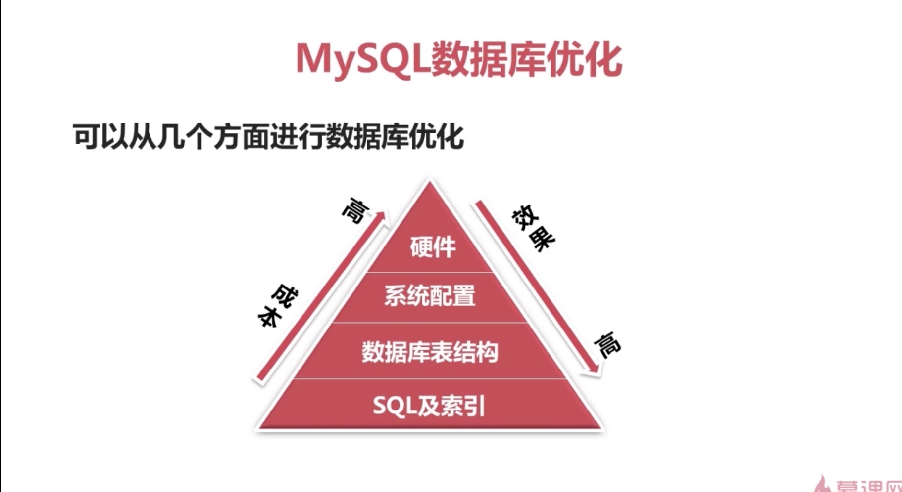
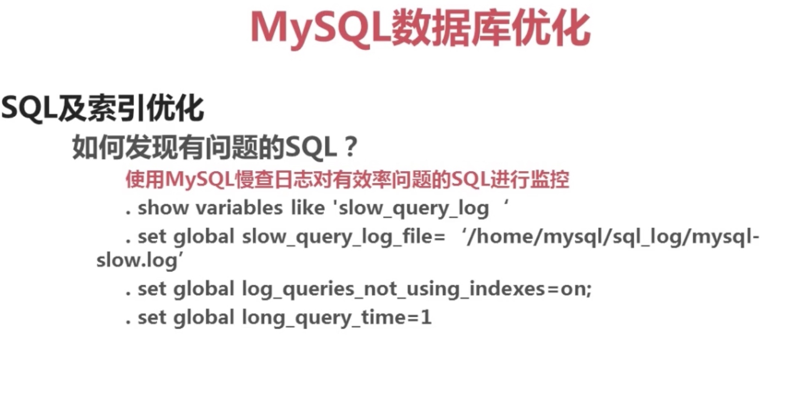

sql 结构良好
索引 适量有效
数据表减少冗余 简洁
系统配置 限制：打开文件数的限制， mysql数据库是基于文件的，每查询一个表都要打开一些文件，文件数达到一定限制，文件就无法打开，就会进行频繁的IO操作
硬件 内存 not cpu
io设备 并不能阻塞 数据库锁的机制 成本最高
mysq 数据优化可以从以下几方面进行优化：1、sql及索引优化。2 数据库表结构，根据数据设计查询最优的表结构。3，系统配置优化，对打开文件数和安全的限制。4、硬件，选择最适合数据库的cpu，更快的IO,更大的内存，cpu不是越多越好， IO设备并不能减少锁的机制，所以说硬件的优化成本越高，效果最差。

跟慢查询相关的设置语句。开启慢查询日志：set global slow_query_log=on。
如果设置long_query_time发现值没有改变，可以关掉窗口重开查看。
如果删除了慢查询日志，需要执行flush logs。
开启SQL消耗时间：set profiling=1；查询是否开启：select @@profiling。
explain